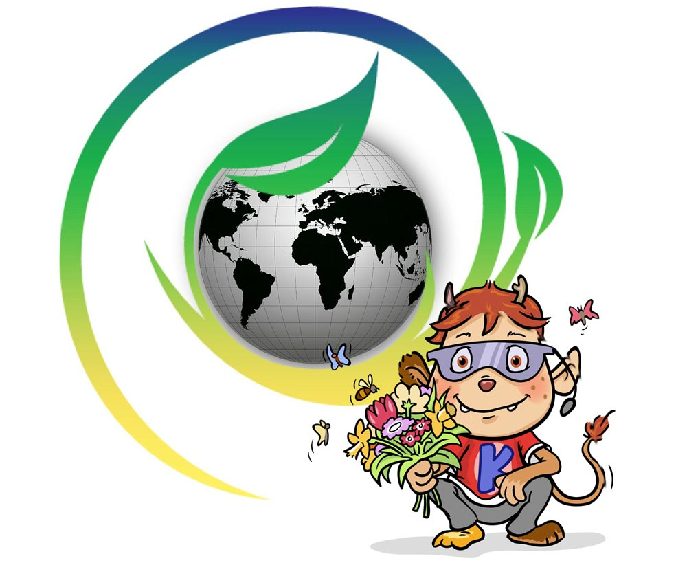
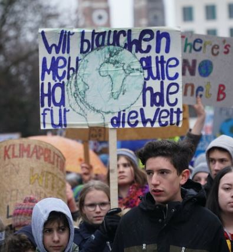

„Fridays for Future“ ist eine Bewegung von Kindern und Jugendlichen, die freitags nicht in die Schule gehen, sondern auf Demonstrationen. Jeder der will, kann mitmachen. Die Idee hatte ein Mädchen aus Schweden: Greta Thunberg. Vielleicht kennst du ihren Namen schon aus den Nachrichten. Greta und „Fridays for Future“ wollen mit ihrem Schulstreik auf den Klimawandel aufmerksam machen.

Klimawandel bedeutet, dass es auf der Erde langsam immer heißer wird. Das ist sehr gefährlich für alle Pflanzen, Tiere und Menschen. Das passiert, weil wir Menschen so viel dreckige Luft produzieren. Zum Beispiel beim Autofahren und wenn wir neue Sachen herstellen. Die Schüler von „Fridays for Future“ wollen, dass die ganze Welt mehr darauf achtet, weniger dreckige Luft zu erzeugen.
Viele Kinder und Jugendlichen gehen deshalb freitags nicht in die Schule, sondern demonstrieren. Das machen sie, weil sie so die Aufmerksamkeit von Politikern bekommen. Die Schüler werfen der Politik nämlich vor, nicht genug gegen den Klimawandel zu unternehmen, weil ihnen der Kampf gegen den Klimawandel zu teuer ist.

Mittlerweile sind es aber nicht mehr nur Schüler, die jeden Freitag demonstrieren. Auch viele Studenten, Eltern und Lehrer machen mit. Sie alle wollen unbedingt, dass etwas gegen den Klimawandel unternommen wird. Und sie sind auch schon erfolgreich gewesen. Es gibt jetzt eine neue Gruppe in der Regierung, die sich nur mit dem Klimawandel beschäftigt. Die arbeitet gerade auch schon an neuen Gesetzen, damit die Luft auf der Welt wieder sauberer wird.
Denn eigentlich sind sich alle einig: Man muss den Klimawandel stoppen. Die Frage ist aber, was man dafür machen darf und wie schnell es gehen muss.
Bilder von:
- © Fridays for Future Deutschland
- Pixabay Creative Commons CC0